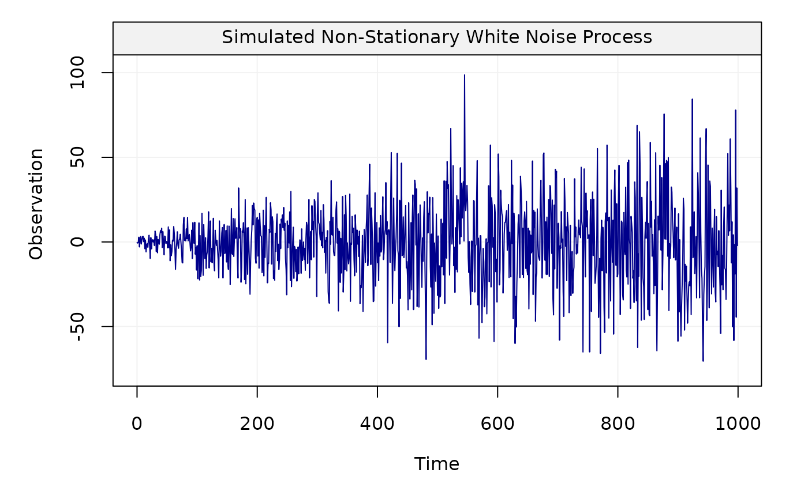
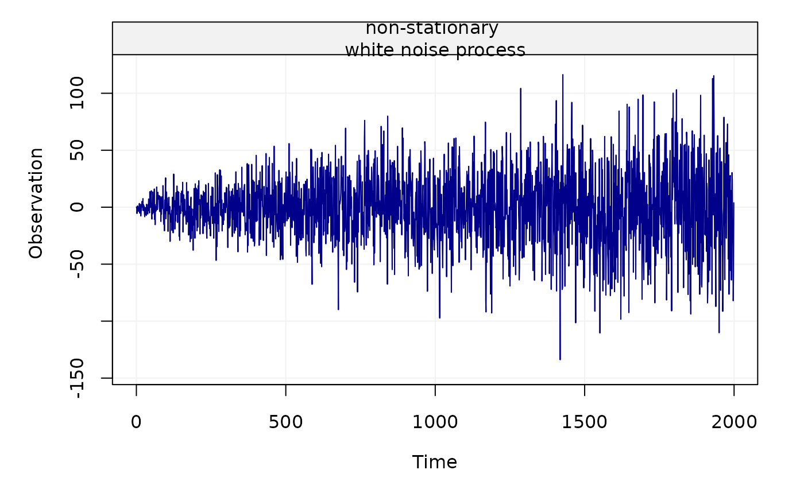

This function allows to generate a non-stationary white noise process.
gen_nswn(n_total, title = NULL, seed = 135, ...)
| n_total | An |
|---|---|
| title | A |
| seed | An |
| ... | Additional parameters. |
A vector containing the non-stationary white noise process.
This function generates a non-stationary white noise process whose theoretical maximum overlapping allan variance (MOAV) corresponds to the theoretical MOAV of the stationary white noise process. This example confirms that the allan variance is unable to distinguish between a stationary white noise process and a white noise process whose second-order behavior is non-stationary, as pointed out in the paper "A Study of the Allan Variance for Constant-Mean Non-Stationary Processes" by Xu et al. (IEEE Signal Processing Letters, 2017), preprint available: https://arxiv.org/abs/1702.07795.
Xt = gen_nswn(n_total = 1000) plot(Xt)Yt = gen_nswn(n_total = 2000, title = "non-stationary white noise process", seed = 1960) plot(Yt)